[ Home ] [ Travel ] [ Photography ] [ Pets ] [ Games] [ Rowing] [ Physics ]


A Wedding in Cancun
Travel
Cruises
Past Cruises (Diaries)
Future Cruises
Rogues Galleries
Land Trips
Diaries (Land Trips)
Hawai'i - Big Island - 04'01
Hawai'i - Maui - 05'02
Hawai'i - Big Island - 04'03
Hawai'i - Kaua'i - 09'04
Hawai'i - Big Island - 04'06
Hawai'i - Maui - 04'06
Mainland China - 05'07
Phoenix, Arizona - 12'07
Greek Isles - 05'08
Hawai'i - Kaua'i - 09'08
Hawai'i - Big Island - 09'09
Hawai'i - Maui - 05'12
Hawai'i - Big Island - 04'13
Ireland - 08'13
Mexico - Cancun 11'13
France/Belgium/Lux 07'15
Hawai'i - Big Island - 05'17
England / Wales - 06'17
Hawai'i - Big Island - 09'19
Photography
Cameras
Underwater
Pets
Tara
Blackie
Whitey
Muffy
Ollie
Rusty
Fluffy
Rufus&Dufus
Games
Rowing
Physics
It was a year ago that Mike & Stacy announced their plans to get married this year in Cancun. This was to be a first for us, staying at an "all-inclusive", as we had only cruised to Mexico before. Although November is the start of the dry season, the weather was unusual and the two weeks preceding our trip was rain. The forecast was for the same for our week. However, we were lucky to have sunny weather at appropriate times, so it wasn't a big deal. The most serious effect was the washed out access road to our hotel.
We flew direct both ways with Sunwing. The flight down from Calgary (Nov 9) was ontime and had
about 40 people from our wedding party, including Mike & Stacy and Chrissy & Matt.
More were coming from Edmonton and B.C. making
about 70 people in all. We arrived about 5:30 PM (in the dark) and were bused to the hotel in
intermittent rain. Because of the eary evenings we were unable to see anything along the way.
We checked into the hotel then had dinner at the Italian restaurant (Siena). After dinner we met Lynn
and John arriving from Vancouver and Dave & Joan arriving from Victoria.
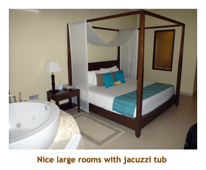
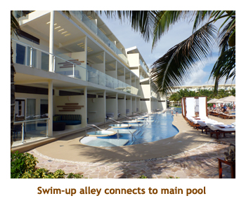
The next day (Nov 10) we spent most of the day learning the layout of the grounds and trying the different restaurants. At 5:30 PM there was a get together on the beach with tacos and munchies. At about 6:30 we were treated to a huge downpour, so the party broke up quickly. D&J and Lynn wanted to try the Italian restaurant, so we ate there again. It was very good.
The following day (Nov 11) was the
wedding day. It was a gorgeous sunny day! In the morning, we had no hot water
in our room, so we were moved (and upgraded) to a ground floor "swim-up" room.
This meant that we could enter the pool right from our patio. Returning to
the room via the pool was tricky as there were no room numbers on the pool
side, so you had to count rooms or leave something distinctive on your patio.
| 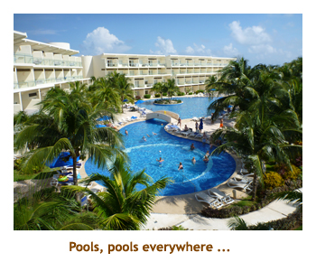 | 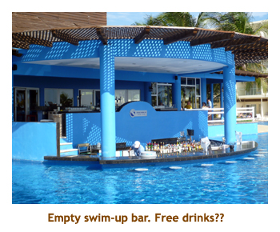 | 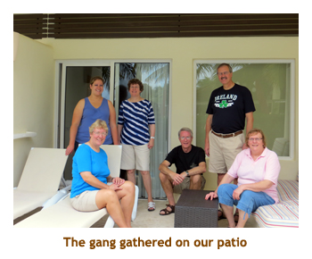 |
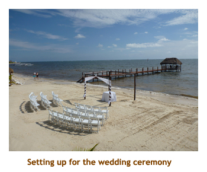 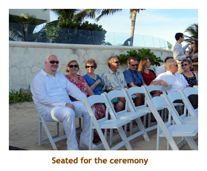
In the afternoon about 3:00, I had to join the groomsmen in Mike's room while the
bridesmaids got ready elsewhere. We joined the waiting spectators on the beach at 4:00.
The ceremony started as the bridal group entered from the side. Stacy looked beautiful
in her wedding dress and Mike was all smiles. Stacy's uncle
MC'ed the wedding vows and a couple of people did some readings. It
was a beautiful ceremony and certainly not too long! The sun was starting to set by then and
it was time for photos. Afterwards we had dinner at the buffet and then on to the reception
party at 7:00 PM. The reception outlasted Marjorie and I, while the young people closed it
out (at 11:00) and then continued on in the hotel bar. It was certainly a wonderful day and a
very special ceremony.
| 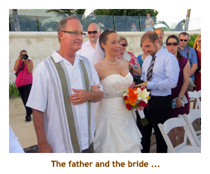 | 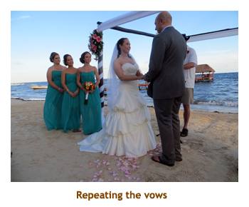 | 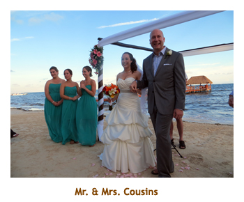 | |
| 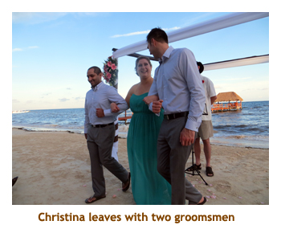 | 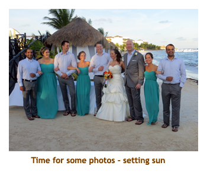 | 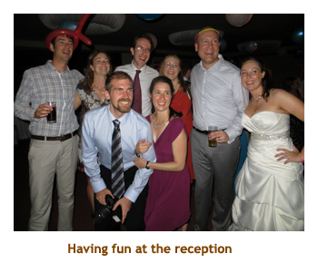 |
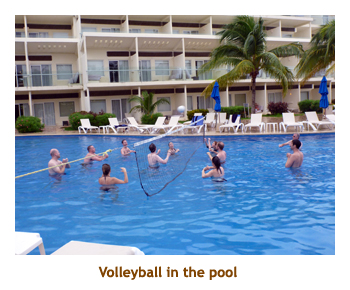 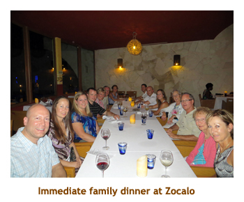
The following day (Nov 12) was mostly sunny. We enjoyed the pool and beach for the day.
For dinner we did the Tapaz restaurant - 7 courses of hors d'ovres. The next day (Nov 13) was
not so nice and rained quite a bit. In the morning we did a snorkel trip through Sunwing. We were
picked at the hotel, drove out almost to the highway (west), drove north for a bit and then turned
east towards the ocean. We arrived at a hotel where the snorkel outfit was located. When we
walked to the beach we could see our hotel right next door - about a 5 minute walk! The snorkeling
was OK but needed more fish and some sunshine. That evening we had a special dinner for the
immediate family (bros, sisters, moms & dads) at Zocalo - the Mexican restaurant. It was very good.
The next day (Nov 14) we just bummed around the hotel grounds. It poured in rain for quite a while,
flooding different parts of the resort. In the afternoon Mike arranged a games session in the reception
lobby - one group played poker and another played Power Grid. Of course I cleaned up at PG!
We dined again at the Tapaz
restaurant. On Nov 15 we had a mix of rain and sun. In the afternoon I joined the kids in a game of
pool volleyball. We ate dinner at Zavaz - the Caribbean restaurant. The next day (Nov 16) was checkout day.
It was beautiful and sunny. The road was washed out so that the airport bus couldn't make it in to the
hotel, so they took us instead in a series of small vans. Our flight scheduled for 5 PM was at least
an hour late leaving and we arrived in Calgary about 1:30. By the time we got our luggage, went
through customs, bussed to the car park, took Chrissy and Matt home and then drove ourselves
home it was 3:30 AM. The kitties were fine and it was nice to be back home again.
| 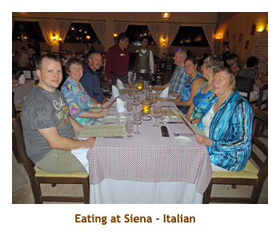 | 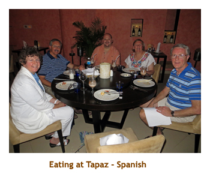 | 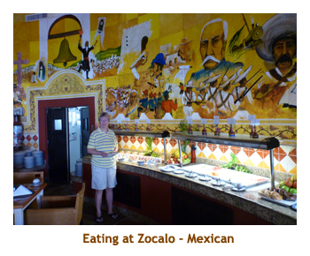 |